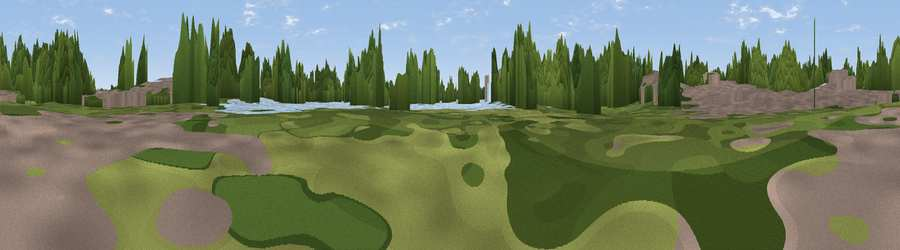

Viewpoint near Tottenham
#45217 in England · top 70% of its area beats it · near TottenhamWhere it is
The exact computed spot (TQ 34922 89194). Click the marker for map links.
The view, rendered

A 360° render of this exact spot computed from the terrain model, tree cover and land cover — summer colours, afternoon light, calibrated against photographs of famous viewpoints. Real trees, hedges and buildings will differ in detail.
The panorama
Grey silhouette: terrain skyline in each direction (720 bearings, Earth curvature and refraction included). Dashed green: skyline with trees (+15 m) and buildings (+8 m) as obstacles. Blue strip: how far the ground is visible on each bearing.
Where the view opens
Wedge length = distance to the farthest visible ground on that bearing (vegetation-aware). Rings at 10, 25 and 50 km.
What fills the view
39% woodland · 36% built-up · 18% water · 8% grassland
Angular shares of the visible panorama (visual magnitude), not map area. Landscape diversity 0.54 (0–1 Shannon).
Key numbers
More beautiful places nearby
The staircase of upgrades: each row has a higher view potential than everything closer. Driving times are estimates from straight-line distance, calibrated against real road routing — check an actual route before setting out.
| Place | Direction | Drive | Score |
|---|---|---|---|
| Viewpoint near Walthamstow | S · 1 km | ~3 min | 24.4 |
| Viewpoint near Wood Green | WSW · 4 km | ~9 min | 35.2 |
| Moon Hill | NE · 5 km | ~10 min | 40.3 |
| Viewpoint near Wood Green | W · 5 km | ~12 min | 51.8 |
| Viewpoint near Eltham | SSE · 15 km | ~27 min | 52.2 |
| Harrow on the Hill | W · 20 km | ~33 min | 60.7 |
| Viewpoint near Tatsfield | S · 34 km | ~52 min | 61.0 |
| Viewpoint near Limpsfield | S · 35 km | ~53 min | 62.7 |
51.58546, -0.05396 · source: osm viewpoint · position refined by local search. Computed location — check access rights before visiting.